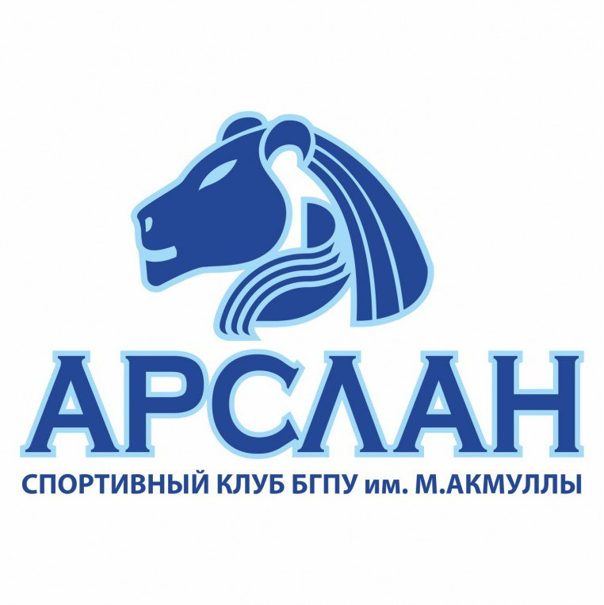

По итогам конкурса 2018 года проектов фундаментальных научных исследований, проводимого совместно РФФИ, Национальной академией наук Азербайджана и Фондом развития науки при Президенте Азербайджанской Республики поддержку получил проект «Методы теории функций в теории операторов» под руководством д.ф.-м.н., профессора кафедры математики и статистики Я.Т. Султанаева. 6 ноября 2013 года Спортивный Студенческий Клуб "Арслан" БГПУ им. М.Акмуллы получил документы о регистрации регионального общественного объединения. Он создан с целью развития физической культуры и спорта среди студентов, аспирантов, преподавателей, сотрудников университета и членов их семьи. Спортивный клуб укрепляет здоровье студентов, воспитывая их жизненно важные морально-волевые качества. Внедряя здоровый образ жизни, способствует повышению качества, подготавливаемых ВУЗом специалистов. Название клуба в переводе с башкирского языка означает лев. За время существования клуба было проведено множество крупных мероприятий: Клубный турнир АССК ПФО, Ежегодные спартакиады вуза, Русский силомер в г.Уфа, прием нормативов ГТО в РБ, прием нормативов Студзачет АССК на международном форуме "Золото тюрков", Студенческий турнир по киберспорту. Наш клуб входит в топ-10 студенческих спортивных клубов России по версии АССК и в топ-5 по версии РСМ. Большую помощь в деятельности спортивного клуба оказывает деловая связь и постоянный контакт с деканом ФФК А.Ю.Костаревым, зав. кафедрой физического воспитания и спорта А.В.Даниловым, кафедрой безопасности жизнедеятельности З.А.Хуснутдиновой, общественными организациями, профкомом студентов и сотрудников. Сейчас директором клуба является С.Ю.Никитина, которая активно общается со студентами и оказывает разного рода помощь в области спорта.